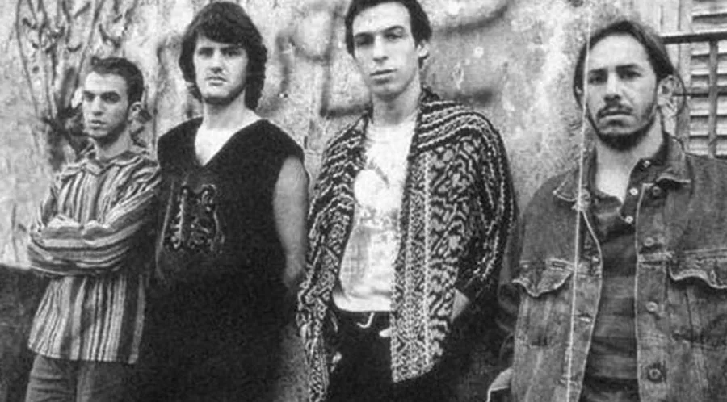
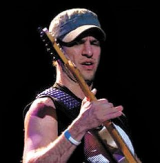
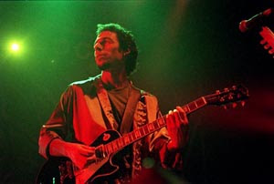
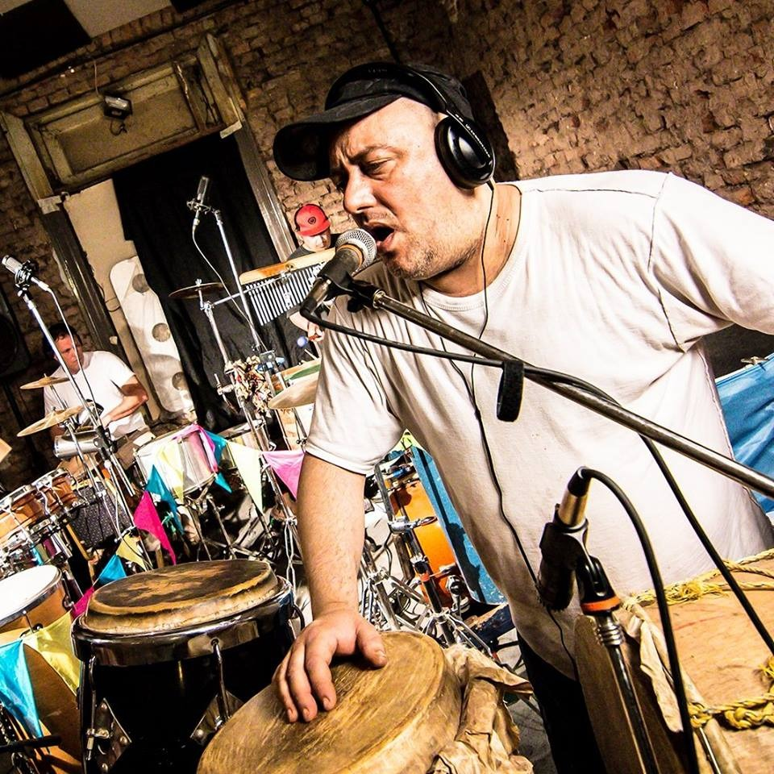
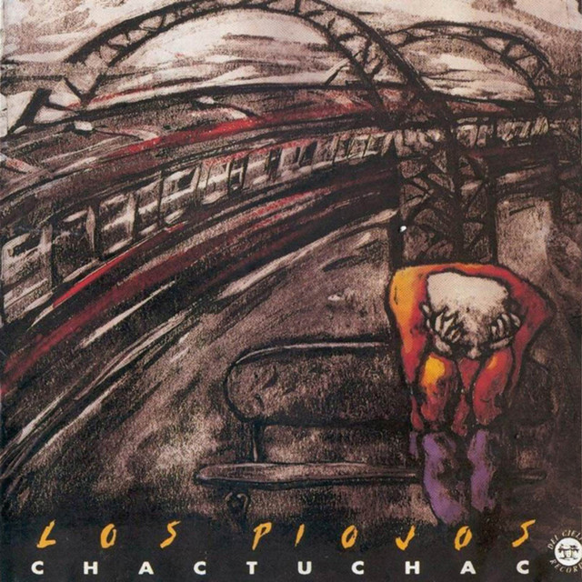
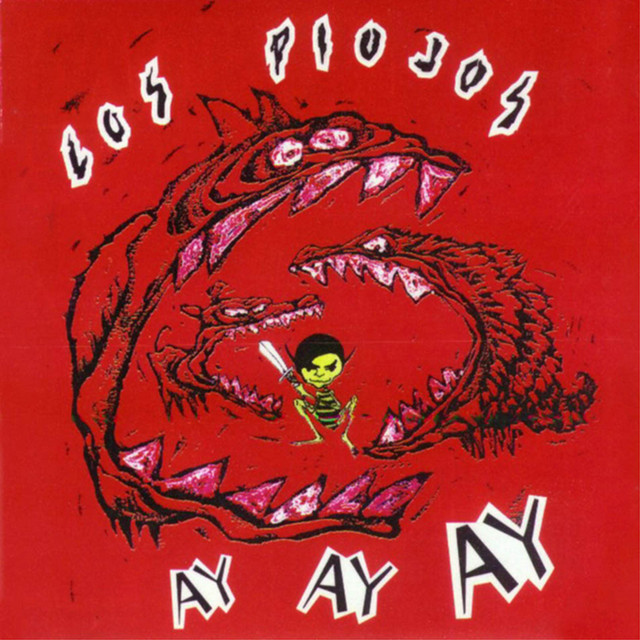
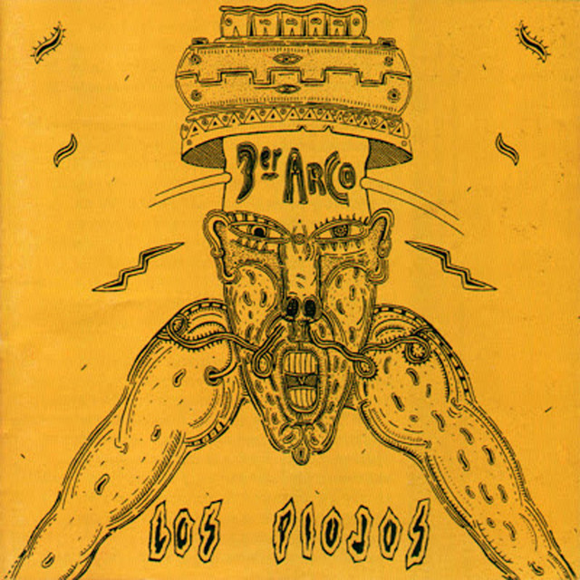
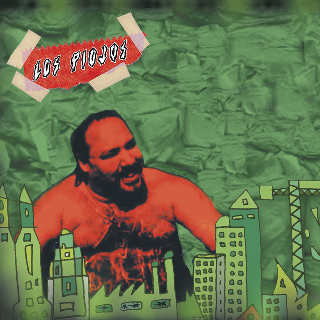
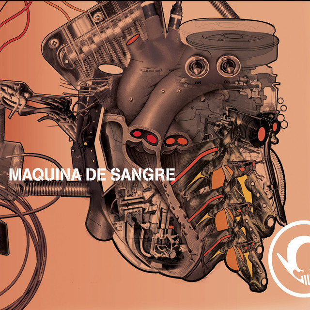
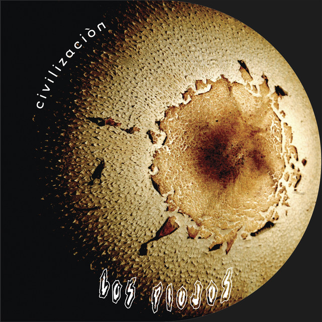

Una Página PIOJOSA
Los Piojos fueron una de las bandas más icónicas del rock argentino. Con un sonido que fusionaba rock, blues y ritmos folclóricos, marcaron una época en la música nacional. A lo largo de su carrera, lanzaron siete álbumes de estudio y se ganaron un lugar especial en el corazón de sus seguidores.
En esta página vamos a repasar su historia, sus integrantes y toda su discografía.

Fundación e Integrantes
Los Piojos se formaron en 1988 en El Palomar, Buenos Aires. Sus integrantes originales fueron:
- Andrés Ciro Martínez (voz y armónica)

- Gustavo Kupinski (guitarra)

- Daniel "Piti" Fernández (guitarra y coros)

- Miguel Ángel "Micky" Rodríguez (bajo)
- Daniel Buira (batería)

- Mencion honorifica a miembros como Pablo Guerra, Sebastian Cardero(Baterista) y a Chuky (Tecladista) que tambien tuvieron un paso por la banda
Chac Tu Chac (1992)
Primer álbum de Los Piojos, lanzado en 1992. Este disco marcó el inicio de la banda en la escena del rock nacional.

Ay Ay Ay (1994)
Segundo álbum de la banda, consolidando su estilo y ganando mayor popularidad.

Tercer Arco (1996)
Uno de los discos más exitosos de Los Piojos, con canciones icónicas como "El Farolito" y "Maradó".

Azul (1998)
Un disco con mayor experimentación musical e inclusión de nuevos instrumentos.

Verde Paisaje del Infierno (2000)
Un disco más oscuro con fuerte crítica social.

Máquina de Sangre (2003)
Explora nuevos ritmos y sonidos, mezclando rock con influencias latinas.

Civilización (2007)
Último álbum de estudio de la banda antes de su separación en 2009.
